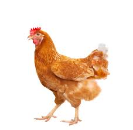

Chicken


The chicken (Gallus gallus domesticus) is a domesticated junglefowl species, with attributes of wild species such as the grey and the Ceylon junglefowl[1] that are originally from Southeastern Asia.
Originally raised for cockfighting during the 500 B.C time frame in China according to estimations in the
study
of the sub-haplogroup
C1,[2]or for special ceremonies, chickens were not kept for food until
the
Hellenistic
period (4th–2nd centuries BC).[3] [4] Humans now keep
chickens primarily as a source of food (consuming both
their meat and eggs) and as pets.
Terminology
- Biddy: a newly hatched chicken[15][16]
- Capon: a castrated or neutered male chicken[a]
- Chick: a young chicken[17]
- Chook /tʃʊk/: a chicken (Australia/New Zealand, informal)[18]
- Cockerel: a young male chicken less than a year old[19]
- Dunghill fowl: a chicken with mixed parentage from different domestic varieties.[20]
- Pullet: a young female chicken less than a year old.[21] In the poultry industry, a pullet is a sexually immature chicken less than 22 weeks of age.[22]
- Yardbird: a chicken (southern United States, dialectal)[23]
Etymology
According to Merriam-Webster, the term rooster (i.e. a roostin bird) originated in the mid- or late 18th century as a euphemism to avoid the sexual connotation of the original English cock ,[26][27][28] and is widely used throughout North America. Roosting is the action of perching aloft to sleep at night.[29]General biology and habitat
Behavior
Social behaviour
Chickens are gregarious birds and live together in flocks. They have a communal approach to the incubation of eggs and raising of young. Individual chickens in a flock will dominate others, establishing a 'pecking order', with dominant individuals having priority for food access and nesting locations. Removing hens or roosters from a flock causes a temporary disruption to this social order until a new pecking order is established. Adding hens, especially younger birds, to an existing flock can lead to fighting and injury.[36]
Vocalizations
Crowing
Breeds Of Chickens.
- Bantum
- Silkie
- Polish
- Standard
- Easter Egg
- Rhode Island Red

Image courtesy of Wiki
Chickens drink water or H20
1/2 + 1/2 = 1
A Chicken Poem
There was once a pretty chicken;
But his friends were very few,
For he thought that there was nothing
In the world but what he knew:
So he always, in the farmyard,
Had a very forward way,
Telling all the hens and turkeys
What they ought to do and say.
"Mrs. Goose," he said, "I wonder
That your goslings you should let
Go out paddling in the water;
It will kill them to get wet."